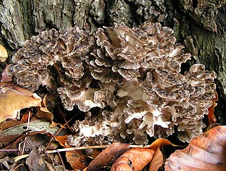

まいたけの生産量 都道府県ランキング
全29都道府県の順位と生産量
まいたけの生産量が全国で最も多いのは新潟県で、3万4,453 tです。全国（5万5,280 t）の62%を占めます。

| 順位 | 都道府県 | 生産量 | 全国に占める割合 |
|---|---|---|---|
| 1位 | 新潟県 | 3万4,453 t | 62% |
| 2位 | 静岡県 | 4,878 t | 8.8% |
| 3位 | 福岡県 | 3,626 t | 6.6% |
| 4位 | 三重県 | 2,863 t | 5.2% |
| 5位 | 長野県 | 2,578 t | 4.7% |
| 6位 | 北海道 | 2,244 t | 4.1% |
| 7位 | 埼玉県 | 2,121 t | 3.8% |
| 8位 | 群馬県 | 1,084 t | 2.0% |
| 9位 | 栃木県 | 196 t | 0.4% |
| 10位 | 島根県 | 180 t | 0.3% |
| 11位 | 山形県 | 166 t | 0.3% |
| 12位 | 福井県 | 108 t | 0.2% |
| 13位 | 茨城県 | 104 t | 0.2% |
| 14位 | 秋田県 | 64 t | 0.1% |
| 15位 | 岩手県 | 60 t | 0.1% |
| 16位 | 岐阜県 | 57 t | 0.1% |
| 17位 | 石川県 | 40 t | 0.1% |
| 18位 | 宮城県 | 36 t | 0.1% |
| 19位 | 東京都 | 20 t | 0.0% |
| 20位 | 鳥取県 | 18 t | 0.0% |
| 21位 | 青森県 | 9 t | 0.0% |
| 22位 | 滋賀県 | 8 t | 0.0% |
| 23位 | 福島県 | 8 t | 0.0% |
| 24位 | 岡山県 | 6 t | 0.0% |
| 25位 | 熊本県 | 3 t | 0.0% |
| 26位 | 高知県 | 1 t | 0.0% |
| 27位 | 京都府 | 0 t | 0.0% |
| 28位 | 宮崎県 | 0 t | 0.0% |
| 29位 | 大分県 | 0 t | 0.0% |
まいたけの生産量の推移（令和3年〜令和7年）
全国の生産量は、令和3年の5万4,521 tから令和7年の5万5,280 tへ、ほとんど変わっていません。期間中、1位は一貫して新潟県です。
| 年 | 全国 | 1位 | 2位 | 3位 |
|---|---|---|---|---|
| 令和7年 | 5万5,280 t | 新潟県3万4,453 t | 静岡県4,878 t | 福岡県3,626 t |
| 令和6年 | 5万6,609 t | 新潟県3万5,597 t | 静岡県4,889 t | 福岡県3,690 t |
| 令和5年 | 5万5,290 t | 新潟県3万5,642 t | 静岡県4,831 t | 福岡県3,748 t |
| 令和4年 | 5万6,763 t | 新潟県3万6,621 t | 静岡県4,996 t | 福岡県3,824 t |
| 令和3年 | 5万4,521 t | 新潟県3万6,680 t | 静岡県5,102 t | 福岡県3,768 t |
この数字について
- 分類：きのこの仲間
- 全国の生産量：5万5,280 t
- この数字が表すもの：生産量（生産された重量）
- 調査：特用林産基礎資料 令和7年
- 29県分を調査（調査していない県は順位に入りません）
まいたけの生産量について、よくある質問
- まいたけの生産量が日本一の都道府県はどこですか？
- 新潟県です。特用林産基礎資料（令和7年）で3万4,453 tでした。
- まいたけの生産量ランキング2位・3位はどこですか？
- 2位は静岡県（4,878 t）、3位は福岡県（3,626 t）です。
- まいたけの生産量ランキング4位・5位はどこですか？
- 4位は三重県（2,863 t）、5位は長野県（2,578 t）です。まいたけの全29県の順位は上の表のとおりです。
- まいたけの全国の生産量はどれくらいですか？
- 5万5,280 t（令和7年）です。